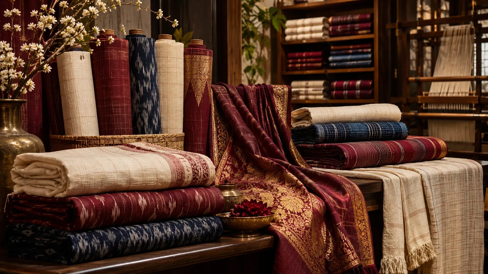

Ask about the fibre
Cotton, silk and blended yarns behave differently. Confirm the composition instead of guessing from appearance.
Discover textile examples by material, use, colour and budget. Every price on this concept catalogue is illustrative.

Concept catalogue: illustrative images, composition notes and example prices. Confirm material, hand-spinning, provenance and exact availability with a real supplier before purchasing.
A thoughtful textile purchase starts with its intended use and the information you can verify.
Cotton, silk and blended yarns behave differently. Confirm the composition instead of guessing from appearance.
Plain, twill, jacquard and supplementary-weft effects create different textures; not every pattern indicates handweaving.
Compare per-metre cloth with per-piece sarees, stoles and furnishings on the correct basis.